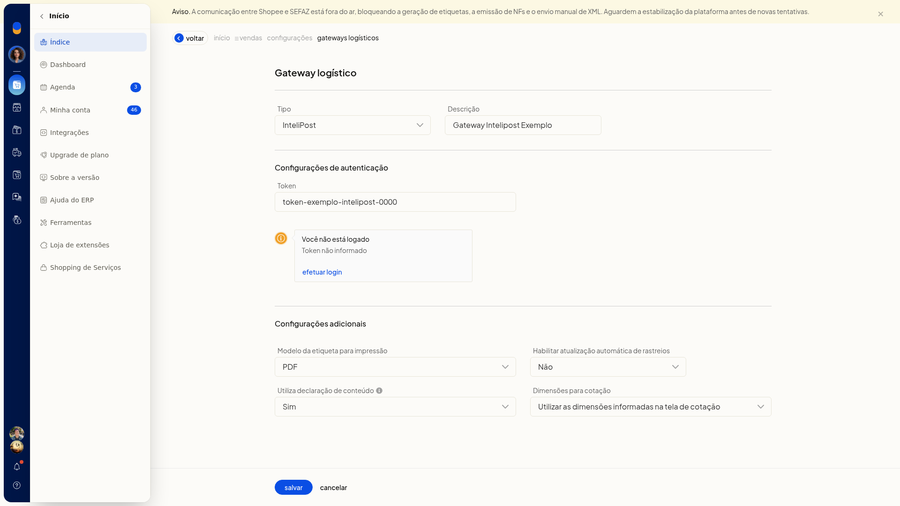
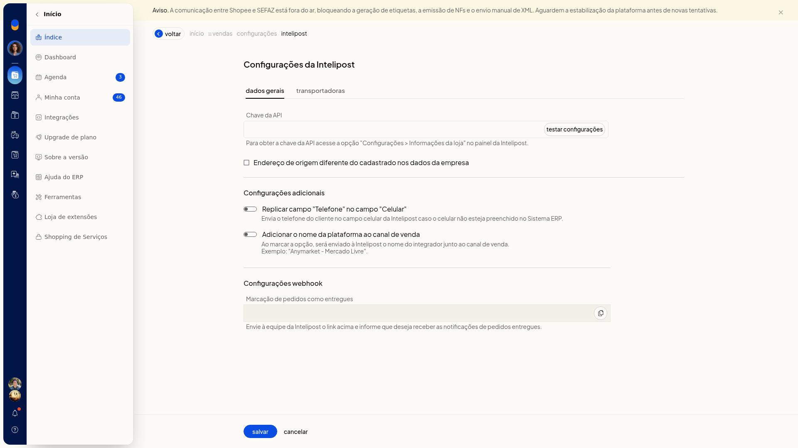
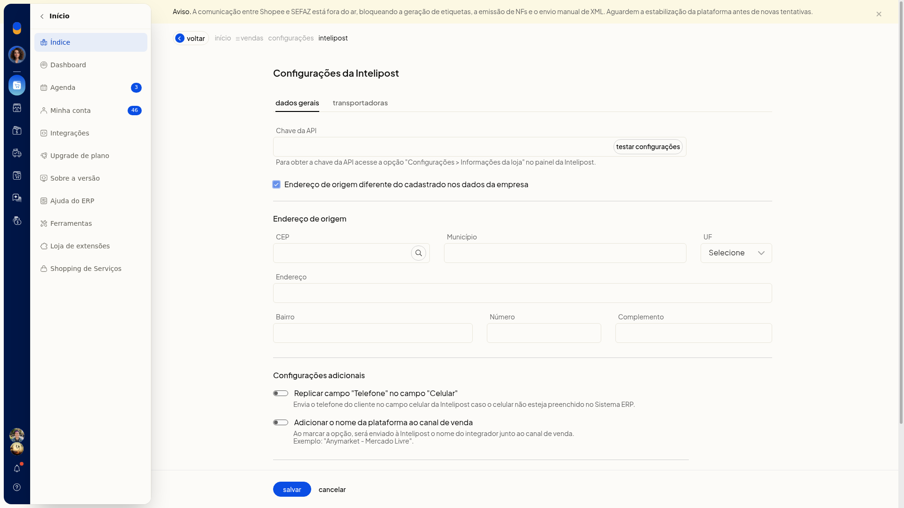
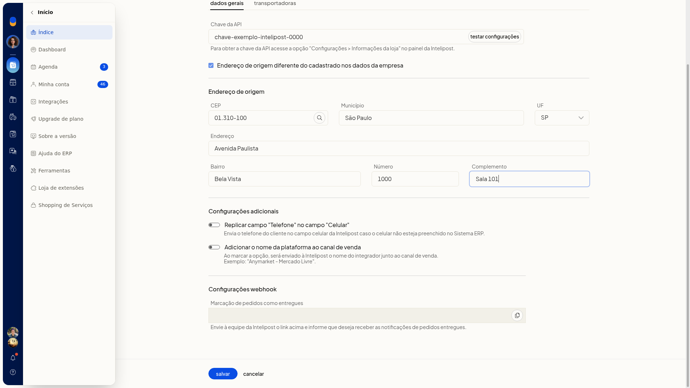
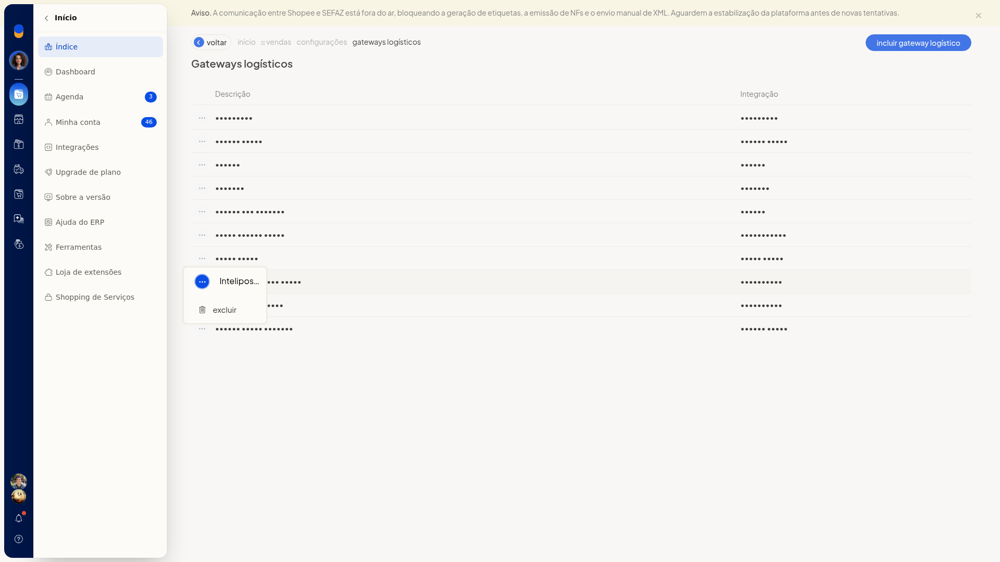

Intelipost
A Intelipost no ERP da Olist liga a conta de frete ao ERP. Você inclui um gateway do tipo InteliPost, com token, modelo da etiqueta, rastreio, declaração de conteúdo e origem das dimensões.
Na mesma área de vendas, Configurações da Intelipost guarda a chave de API, um endereço de origem diferente do cadastro da empresa, se quiser, e as opções de telefone, canal de venda e link para marcar pedidos como entregues. Com chave válida, a aba Transportadoras obtém o mapeamento das transportadoras.
Pré-requisitos
- Token da conta Intelipost para incluir o gateway.
- Chave de API da Intelipost para as configurações. Busque no painel da Intelipost, em Configurações > Informações da loja.
- Se a opção não aparecer para você, peça acesso ao administrador da conta.
Importante
- Sem o token, a tela mostra Você não está logado / Token não informado e o link efetuar login.
- A aba Transportadoras só segue com o mapeamento quando a chave de API é válida.
- Em Utiliza declaração de conteúdo, Sim possibilita concluir expedições sem notas fiscais.
Instruções
Incluir o gateway pela tela
- Acesse Configurações > Configurações ERP.
- Na aba Vendas, na seção Expedição e Logística, clique em Gateways logísticos.

- Clique em Incluir gateway logístico.

- Em Tipo, selecione InteliPost.
- Preencha Descrição.
- Informe o Token.
- Em Modelo da etiqueta, selecione PDF ou ZPL.
- Em Habilitar atualização automática de rastreios, selecione Sim ou Não.
- Em Utiliza declaração de conteúdo, selecione Sim ou Não.

- Nas dimensões, selecione Utilizar as dimensões informadas na tela de cotação ou Utilizar as dimensões dos produtos.

- Clique em Salvar para concluir a inclusão. Para descartar, clique em Cancelar. A tela volta à lista sem incluir o gateway.
Configurar a Intelipost pela tela
- Acesse Configurações > Configurações ERP.
- Na aba Vendas, na seção Expedição e Logística, clique em Configurações da Intelipost.

- Na aba Dados Gerais, preencha Chave da API.

- Se o envio deve sair de outro endereço, marque Endereço de origem diferente do cadastrado nos dados da empresa.

- Preencha CEP, Município, UF, Endereço, Bairro, Número e Complemento.

- Se quiser, marque Replicar campo "Telefone" no campo "Celular". O telefone do cliente é enviado no celular da Intelipost quando o celular está vazio no ERP.
- Se quiser, marque Adicionar o nome da plataforma ao canal de venda. O envio leva o nome do integrador mais o canal, como Anymarket - Mercado Livre.
- No campo Marcação de pedidos como entregues, use o botão de copiar para enviar o link à Intelipost.

- Abra a aba Transportadoras para obter o mapeamento. Sem chave válida, a tela mostra Erro ao obter mapeamento das transportadoras — informe uma chave de API válida. Clique em Fechar para voltar ao formulário.

- Clique em salvar para gravar ou em testar configurações para testar. Voltar retorna à aba Vendas sem gravar o que foi digitado.
Informações adicionais
A lista pode repetir a mesma integração
A lista de Gateways logísticos mostra Descrição e Integração. Pode haver mais de um gateway da mesma integração.
O menu de ações da linha tem Excluir
No menu de ações da linha, a opção é Excluir.

Esta tela não tem cadastro por planilha
Não há botão de importar planilha nem outro controle de cadastro em massa.